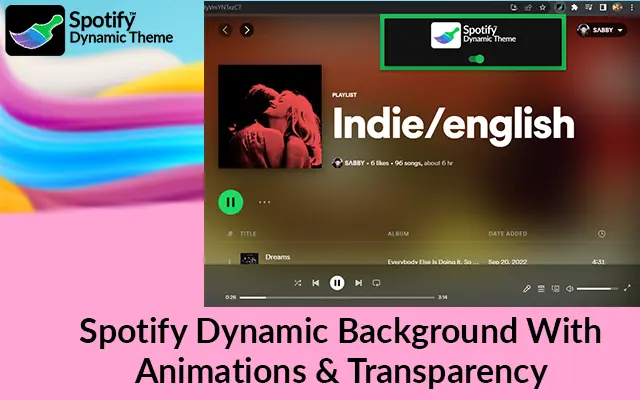

Are you a fan of vibrant, animated backgrounds with a touch of transparency? Meet the Spotify Dynamic Theme extension – your ticket to transforming the look and feel of your Spotify Web Player. Moreover, this innovative theme allows you to personalize your music experience by changing the background of the song or album cover you're playing, complete with stunning transitions and effects. Furthermore, exclusively compatible with open.spotify.com, this extension promises a seamless and visually captivating enhancement to your Spotify sessions. Therefore, ready to elevate your Spotify game? Follow the installation instructions below to unlock the full potential of Spotify Theme. Stay tuned for all the details on its features and setup process!
